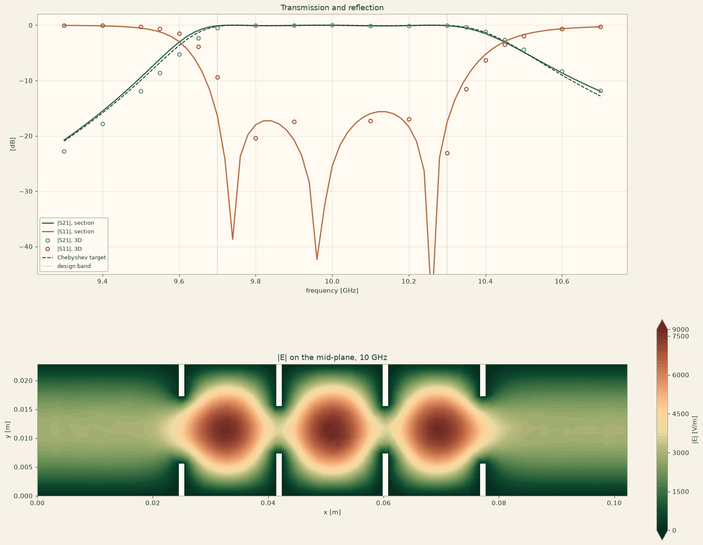
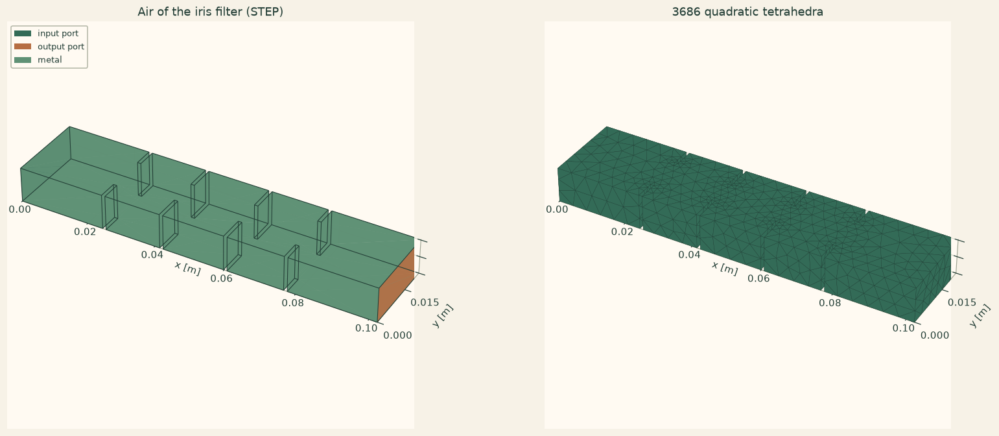

Docs › Examples › Waveguide iris bandpass filter
Microwaves, waveguide filters · 3D
Waveguide iris bandpass filter
Four symmetric inductive irises in a WR-90 waveguide form a three-pole Chebyshev bandpass filter for 9.7 to 10.3 GHz.
Run locally with OneSimulation. The example downloads are free. Running them requires an activated runtime. Runtime Alpha 0.2.1a7 · CPython 3.13 on macOS (Apple Silicon), Ubuntu 22.04 (x86-64), and Windows x64. Installation and activation · View pilot plans. Scope of the reference checks.

What it computes
OneSimulation solves the time-harmonic Maxwell equation for the electric field in the air of the filter with second-order Nedelec elements; the waveguide ports compute the modes of their cross-sections, feed and absorb them and return the S-parameters over the X band. The irises span the full height, so the H-plane section of the same part is an exact 2D reduction and serves as independent cross-check, and the response is compared with the Chebyshev design target. The script that builds the STEP file comes with the notebook.
What it checks
The section passes the band 9.70 to 10.30 GHz within the 0.1 dB ripple and follows the Chebyshev response to 0.073 in |S21|^2; in the pass band the 3D filter agrees with the section to 1.3e-2, its half-power edges lie 34 and 14 MHz (0.35 and 0.13 %) higher and move towards the section on finer meshes, and |S11|^2 + |S21|^2 = 1 to 5e-14.
Geometry
The notebook starts at the import of the CAD file waveguide_iris_bandpass_filter.step: STEP (AP242), readable by any CAD program, with the names of the faces that the boundary conditions use. Put it next to the notebook.

The geometry script
The script waveguide_iris_bandpass_filter_geometry.py builds the geometry with the CAD objects of OneSimulation and writes the file. Change a dimension there, run it, and run the notebook again.
"""Geometry of the OneSimulation example "Waveguide iris bandpass filter".
Builds with the CAD objects of OneSimulation the air inside a WR-90 rectangular waveguide
(22.86 mm x 10.16 mm, axis along x, broad side along y, narrow side along z) with four symmetric
inductive irises: metal plates 1 mm thick across the full height that leave a centred aperture.
The dimensions realize a three-pole Chebyshev bandpass filter (0.1 dB ripple, 9.7 to 10.3 GHz):
the coupled-resonator design with impedance inverters and the thin-iris reactance (Matthaei, Young
and Jones; Marcuvitz) gives apertures of 10.76 and 6.99 mm and iris spacings of 16.50 and 17.95 mm;
refined on the H-plane section for the 1 mm iris thickness they become the values below. 25 mm of
guide lead to the first and from the last iris.
File waveguide_iris_bandpass_filter.step holds the air with the faces port_in (x = 0), port_out
(the far end) and the group metal (walls and irises).
"""
import numpy as np
from onesim.cad.d3 import Box
a, b, thickness, lead = 0.02286, 0.01016, 0.001, 0.025
apertures = (0.01160, 0.00818, 0.00818, 0.01160)
spacings = (0.01691, 0.01841, 0.01691)
planes = lead + np.concatenate(([0.0], np.cumsum(spacings)))
air = Box(length=planes[-1] + lead, width=a, height=b).named("guide")
for x, d in zip(planes, apertures):
for y in (-0.001, (a + d) / 2):
air = air - Box(
length=thickness,
width=(a - d) / 2 + 0.001,
height=b + 0.002,
origin=(x - thickness / 2, y, -0.001),
).named("iris")
faces = air.boundaries
air.grouped(
port_in=faces["guide.x_min"],
port_out=faces["guide.x_max"],
metal=air.select(faces=lambda face: face.id.startswith("iris."))
| faces["guide.y_min"]
| faces["guide.y_max"]
| faces["guide.z_min"]
| faces["guide.z_max"],
).save("waveguide_iris_bandpass_filter.step")The notebook
The complete notebook, cell by cell. Run it to produce the figures and the comparison printout.
A metal plate across a rectangular waveguide that leaves a centred aperture of width \(d\) over the full height, an inductive iris, acts on the TE\(_{10}\) wave like a shunt inductance. Two irises half a guide wavelength apart enclose a resonator; a row of irises couples several resonators and gives a bandpass filter whose pass band and ripple are set by the aperture widths and the spacings.
This filter in a WR-90 guide (\(a=22.86\) mm, \(b=10.16\) mm) has four irises 1 mm thick and three resonators. Its dimensions come from the classical coupled-resonator design of a Chebyshev filter with 0.1 dB ripple and the pass band 9.7 to 10.3 GHz (impedance inverters from the low-pass prototype, Matthaei, Young and Jones, Microwave Filters, Impedance-Matching Networks, and Coupling Structures, 1980, §8.06; iris reactance after Marcuvitz, Waveguide Handbook, §5.21), refined on the H-plane section for the finite iris thickness:
| | irises 1 and 4 | irises 2 and 3 | |---|---|---| | aperture \(d\), thin-iris design [mm] | 10.76 | 6.99 | | aperture \(d\), built [mm] | 11.60 | 8.18 |
The iris spacings are 16.91 mm (outer resonators) and 18.41 mm (middle resonator); the design gave 16.50 and 17.95 mm.
| faces | condition | |---|---| | port_in | waveguide port, TE\(_{10}\) fed with 1 W, TE\(_{20}\) absorbed | | port_out | waveguide port, TE\(_{10}\) and TE\(_{20}\) absorbed | | metal (walls and irises) | perfect electric conductor |
OneSimulation solves \(\nabla\times(\mu_r^{-1}\nabla\times\mathbf E)-k_0^2\varepsilon_r\mathbf E=0\) with second-order Nédélec elements. The air comes from waveguide_iris_bandpass_filter.step, written by waveguide_iris_bandpass_filter_geometry.py with the CAD objects of OneSimulation.
Reference. (i) The design target: a three-pole Chebyshev response with the ripple \(\varepsilon^2=10^{0.01}-1\),
with the guide wavelength \(\lambda_g=1/\sqrt{(f/c)^2-(2a)^{-2}}\) and \(\lambda_{g0}\) at the centre \(f_0=\sqrt{f_1f_2}\). (ii) The irises span the full height, so the TE\(_{10}\) field does not vary across it: the 3D problem reduces exactly to the scalar Helmholtz equation for \(E_z\) on the H-plane section. That 2D computation is the independent cross-check of the 3D filter. (iii) A lossless filter conserves power, \(|S_{11}|^2+|S_{21}|^2=1\).
import numpy as np
from onesim.cad.d2 import Plane
from onesim.cad.exchange import load
from onesim.materials import VACUUM_PERMEABILITY, VACUUM_PERMITTIVITY
from onesim.materials.electromagnetic import IsotropicElectromagneticMaterial
from onesim.meshing import TetrahedralMesher, TriangularMesher
from onesim.numerics import Numerics
from onesim.numerics.fem import FiniteElement, Lagrange, Nedelec
from onesim.numerics.linear import ComplexSparseDirect
from onesim.physics.electromagnetics import (
FrequencyDomainMaxwell,
PerfectElectricConductor,
SectionWaveguidePort,
scattering_parameters,
)
from onesim.simulation import Problem, Simulation
from onesim.visualization import plots, theme
theme.set()
light = 1 / np.sqrt(VACUUM_PERMEABILITY * VACUUM_PERMITTIVITY)Geometry and mesh
load reads the air of the filter; section at half height gives the H-plane section, whose sides keep the face names. The 3D meshes have tetrahedra of at most 4, 3 and 2.5 mm (refined at the iris edges by the mesher), the section triangles of 0.8 mm.
guide = load("waveguide_iris_bandpass_filter.step")
faces = guide.boundaries
width, height = guide.size[1], guide.size[2]
section = guide.section((0, 0, 1), origin=(0, 0, height / 2))
meshes = {
h: TetrahedralMesher(target_size=h).generate(guide) for h in (0.004, 0.003, 0.0025)
}
section_mesh = TriangularMesher(target_size=0.0008).generate(section)
view = plots.Camera(elevation=35, azimuth=-60)
fig = plots.figure(1, 2, size=(15, 6))
plots.geometry(
guide,
selection={
"input port": faces.port_in,
"output port": faces.port_out,
"metal": faces.metal,
},
labels=False,
camera=view,
title="Air of the iris filter (STEP)",
ax=fig[0],
)
plots.mesh(
meshes[0.004],
groups=("all",),
legend=False,
camera=view,
title=f"{meshes[0.004].cell_count} quadratic tetrahedra",
ax=fig[1],
)
plots.show()Model
model builds the Maxwell model in 3D or on the section (polarization across the guide height, \(E_z\), which is normal to the section); solve adds the ports and the metal. The 3D filter is swept from 9.3 to 10.7 GHz in steps of 100 MHz (50 MHz on the flanks), the section in steps of 20 MHz.
model = lambda frequency, domain, options: FrequencyDomainMaxwell(
domain=domain,
frequency=frequency,
material=IsotropicElectromagneticMaterial(),
phasor_convention="exp(-i*omega*t)",
amplitude_convention="peak",
**options,
)
solve = lambda m, part, mesh, element: Simulation(
problem=Problem(
name="Iris filter",
geometry=part,
physics=(m,),
boundary_conditions=(
SectionWaveguidePort(
physics=m, boundary=part.boundaries.port_in, modes=2, incident_power=1.0
),
SectionWaveguidePort(physics=m, boundary=part.boundaries.port_out, modes=2),
PerfectElectricConductor(physics=m, boundary=part.boundaries.metal),
),
),
mesh=mesh,
numerics=Numerics(
spatial=FiniteElement(element=element), linear_solver=ComplexSparseDirect()
),
).solve_stationary()
in_3d = lambda frequency, h: scattering_parameters(
solve(m := model(frequency, guide.volume, {}), guide, meshes[h], Nedelec(order=2)),
m,
)
on_section = lambda frequency: scattering_parameters(
solve(
m := model(frequency, section.domain(), {"polarization": "Ez"}),
section,
section_mesh,
Lagrange(order=2),
),
m,
)
coarse, fine = np.sort(
np.r_[np.arange(9.3e9, 10.71e9, 0.1e9), 9.55e9, 9.65e9, 10.35e9, 10.45e9]
), np.arange(9.3e9, 10.701e9, 0.02e9)
sweep = {
"3D": {f: in_3d(f, 0.004) for f in coarse},
"section": {f: on_section(f) for f in fine},
}
study = {h: in_3d(9.65e9, h) for h in meshes}Results
The transmitted power of the 3D filter, of the section and of the Chebyshev design target, the pass band of the section, the half-power edges, the power balance and the mesh study on the lower flank, where the transmission is most sensitive.
guide_wavelength = lambda f: 1 / np.sqrt((f / light) ** 2 - (1 / (2 * width)) ** 2)
low, high, ripple = 9.7e9, 10.3e9, 10**0.01 - 1
centre = np.sqrt(low * high)
spread = (guide_wavelength(low) - guide_wavelength(high)) / guide_wavelength(centre)
omega = (
lambda f: 2
/ spread
* (guide_wavelength(centre) - guide_wavelength(f))
/ guide_wavelength(centre)
)
chebyshev = lambda f: 1 / (
1
+ ripple
* np.where(
np.abs(omega(f)) <= 1,
np.cos(3 * np.arccos(np.clip(omega(f), -1, 1))),
np.cosh(3 * np.arccosh(np.maximum(np.abs(omega(f)), 1))),
)
** 2
)
through = {
name: np.array([abs(runs[f][(1, 0)]) ** 2 for f in runs])
for name, runs in sweep.items()
}
reflected = {
name: np.array([abs(runs[f][(0, 0)]) ** 2 for f in runs])
for name, runs in sweep.items()
}
print("f [GHz] |S21|^2 3D |S21|^2 section Chebyshev target")
for f, value in zip(coarse, through["3D"]):
print(
f"{f / 1e9:7.2f} {value:12.5f} {np.interp(f, fine, through['section']):17.5f} {chebyshev(f):18.5f}"
)
passing = fine[through["section"] >= 0.999 / (1 + ripple)]
edge = lambda f, t, side: (
np.interp(0.5, t[f <= 9.7e9], f[f <= 9.7e9])
if side == "lower"
else np.interp(0.5, t[f >= 10.3e9][::-1], f[f >= 10.3e9][::-1])
)
for side in ("lower", "upper"):
e3, e2 = edge(coarse, through["3D"], side), edge(
coarse, np.interp(coarse, fine, through["section"]), side
)
print(
f"{side} half-power edge: 3D {e3 / 1e9:.4f} GHz, section {e2 / 1e9:.4f} GHz, difference {(e3 - e2) / 1e6:+.0f} MHz ({100 * (e3 / e2 - 1):+.2f} %)"
)
inside = (coarse >= 9.8e9) & (coarse <= 10.3e9)
print(
f"in the pass band 9.8-10.3 GHz: |S21|^2 of 3D and section differ by at most {np.max(np.abs(through['3D'] - np.interp(coarse, fine, through['section']))[inside]):.1e}"
)
print(
f"pass band of the section (|S21|^2 within the 0.1 dB ripple): {passing.min() / 1e9:.2f} to {passing.max() / 1e9:.2f} GHz, design 9.70 to 10.30 GHz; "
f"largest deviation from the Chebyshev response over 9.3-10.7 GHz {np.max(np.abs(through['section'] - chebyshev(fine))):.3f}"
)
print(
f"power balance |S11|^2 + |S21|^2 - 1: largest {max(abs(abs(s[(0, 0)]) ** 2 + abs(s[(1, 0)]) ** 2 - 1) for runs in sweep.values() for s in runs.values()):.1e}"
)
print(
"mesh study at 9.65 GHz: cell size [mm] tetrahedra |S21|^2 arg S21 [°] (section: |S21|^2 "
+ f"{np.interp(9.65e9, fine, through['section']):.5f})"
)
for h, s in study.items():
print(
f"{1e3 * h:36.1f} {meshes[h].cell_count:12d} {abs(s[(1, 0)]) ** 2:10.5f} {np.degrees(np.angle(s[(1, 0)])):13.2f}"
)Figure
Top: the transmission and the reflection in decibels, 3D (markers), section (line) and Chebyshev target (dashed). Bottom: the magnitude of the electric field on the mid-plane of the guide at 10 GHz: the wave builds up in the three resonators and leaves at the output.
dB = lambda values: 10 * np.log10(np.maximum(values, 1e-12))
field = (
lambda m: solve(m, guide, meshes[0.003], Nedelec(order=2)).field(m.electric_field)
)(model(10e9, guide.volume, {}))
fig = plots.figure(layout=[["spectrum"], ["field"]], size=(15, 12))
plots.line(
y={
"|S21|, section": (fine / 1e9, dB(through["section"])),
"|S11|, section": (fine / 1e9, dB(reflected["section"])),
},
points={
"|S21|, 3D": (coarse / 1e9, dB(through["3D"])),
"|S11|, 3D": (coarse / 1e9, dB(reflected["3D"])),
},
reference={"Chebyshev target": (fine / 1e9, dB(chebyshev(fine)))},
vlines={"design band": 9.7, "": 10.3},
ylimits=(-45, 2),
xlabel="frequency [GHz]",
ylabel="[dB]",
title="Transmission and reflection",
legend="lower left",
ax=fig["spectrum"],
)
plots.section(
field,
plane=Plane(origin=(0, 0, height / 2), normal=(0, 0, 1)),
component=lambda E, p: np.linalg.norm(np.abs(E), axis=1),
limits="robust",
subdivisions=2,
label="|E| [V/m]",
title="|E| on the mid-plane, 10 GHz",
ax=fig["field"],
)
plots.show()Going further
Add a fifth iris and a fourth resonator in waveguide_iris_bandpass_filter_geometry.py for steeper flanks, or make the irises thicker: the coupling drops, the band narrows and moves up, which is why the thin-iris design had to be refined in the first place.